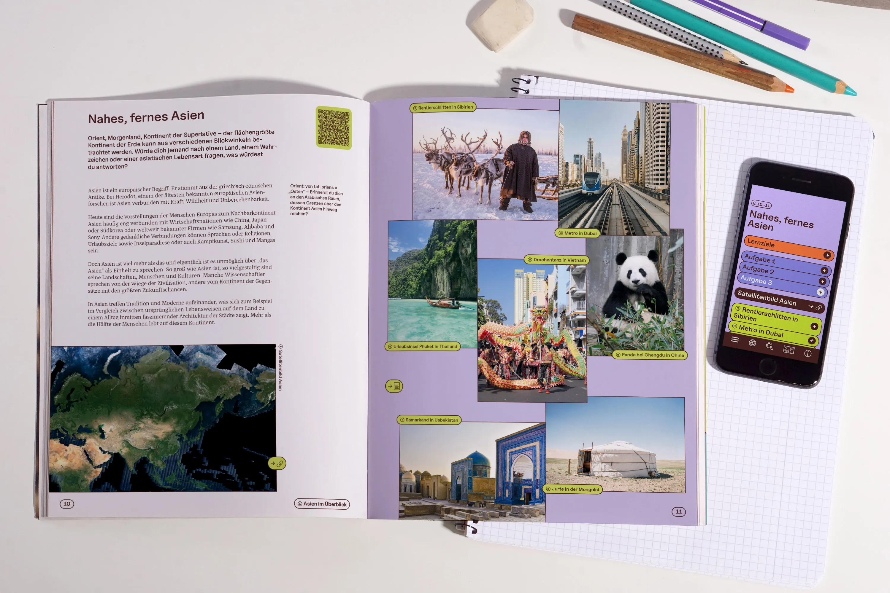
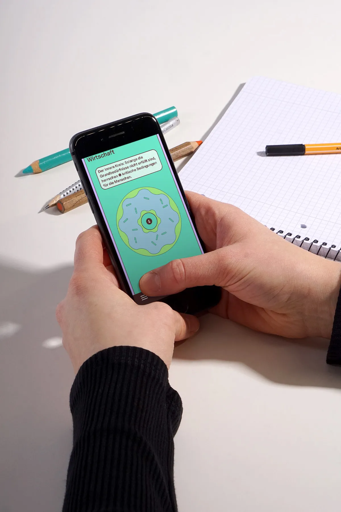
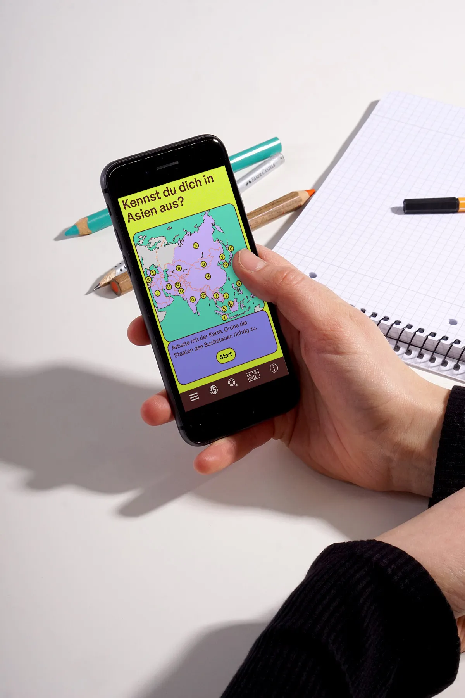
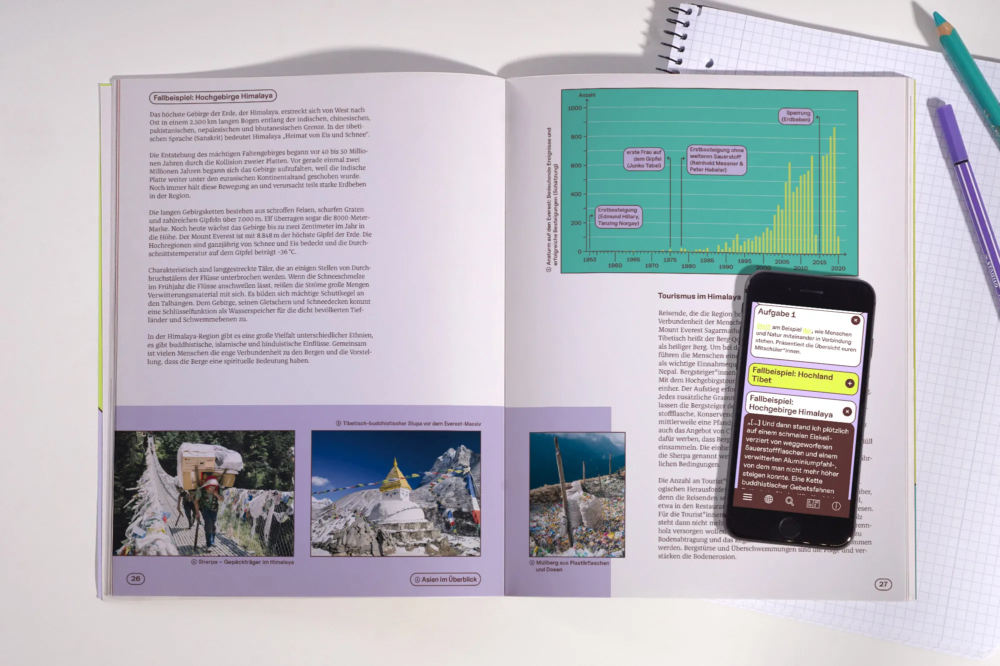
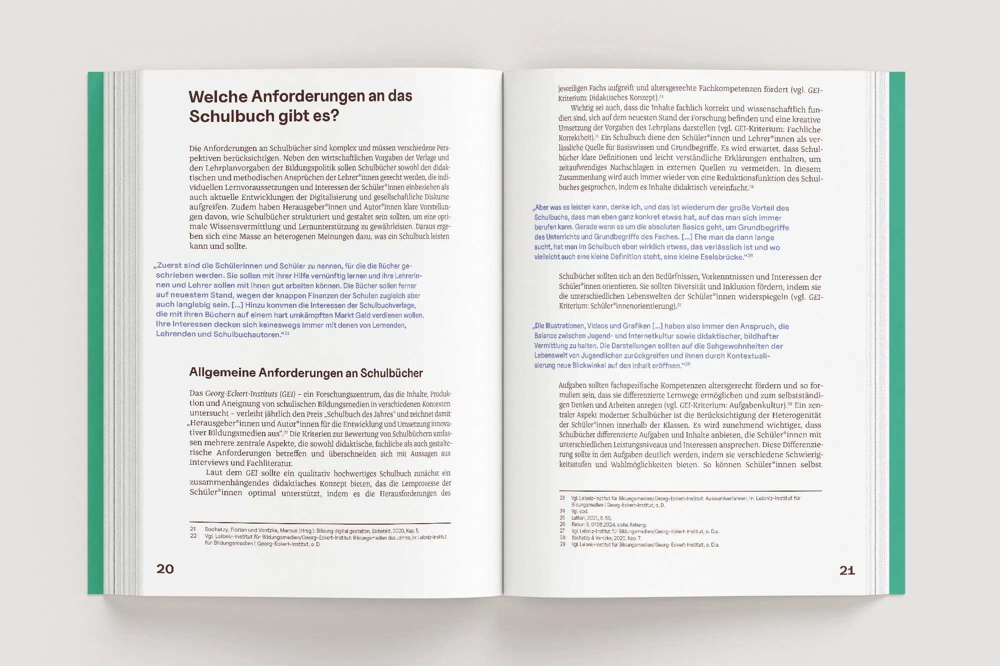
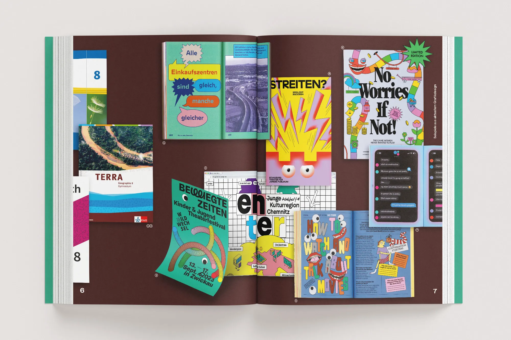
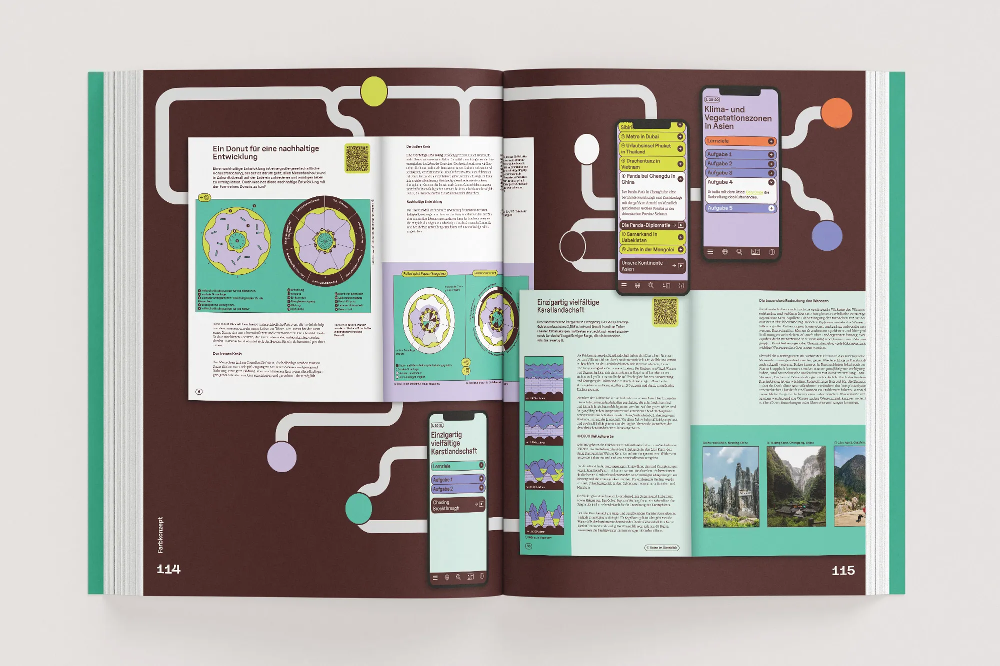
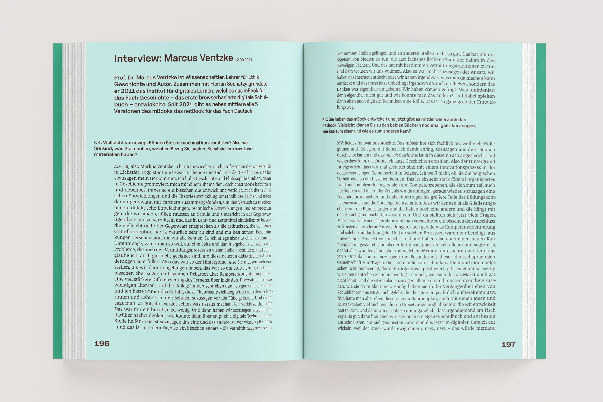

Die Gestaltung von Schulbüchern spielt eine zentrale Rolle im Bildungsprozess. Sie prägt, wie Lerninhalte präsentiert und von Schüler*innen wahrgenommen werden, und beeinflusst maßgeblich die Motivation und den Lernerfolg. Betrachtet man den deutschen Schulbuchmarkt, fällt jedoch auf, dass trotz der zentralen Bedeutung dieser Medien, die visuelle Gestaltung von Schulbüchern sich sehr langsam weiterentwickelt und wenig mit dem zu tun hat, wie aktuelles Grafikdesign unsere Medienlandschaft prägt. Die Masterthesis untersucht die Entstehung, Funktion und Gestaltung deutscher Schulbücher und entwickelt darauf aufbauend ein Gestaltungskonzept für ein modernes Schulbuch. Der praktische Teil setzt dieses Gestaltungskonzept exemplarisch in der Neugestaltung des Schulbuches Terra Geographie 8 vom Ernst Klett Verlag um. Ziel der Arbeit ist es, zu zeigen, welchen Anteil die visuelle Gestaltung zur Schulbuchentwicklung beitragen kann und welchen Unterschied ein gut gestaltetes, zeitgenössisches Bildungsmaterial macht.
Hybrides Bildungsmedium
○ Ausgezeichnet: Mia Seeger Preis 2025
○ Nominiert: Sächsischer Staatspreis für Design 2025